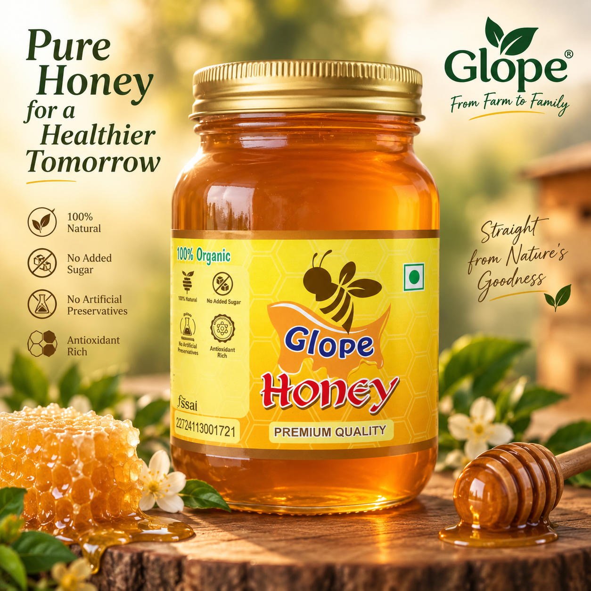

The decision
Ashish Singh stepped away from IPCC training to study honey bees, production, quality and adulteration.
GLOPE AGRO PRODUCTS • AGRA
Thoughtfully presented agro-products for everyday family use — starting with GLOPE Honey.

OUR PRODUCTS
Starting with honey and growing the GLOPE range step by step.
CURRENT PRODUCT
Our first product — rooted in a farmer-family connection to honey and a decision to understand the product before building a brand around it.
NEXT PRODUCT
We will introduce the next product when it is ready to meet the same standard of clarity, quality and genuine value.
THE GLOPE STORY
Honey was part of everyday life while growing up in a farmer family. It was extracted at home, and its source was never a mystery.
Outside that environment, the question became different: how can everyday agro-products reach families in a more genuine and transparent way?
Ashish Singh stepped away from IPCC training to study honey bees, production, quality and adulteration.
GLOPE started as a honey farm, built around a simple product-first idea.
The COVID-19 pandemic brought major losses to the young business.
The business recovered and the long-term purpose became clearer.
Genuine products, sensible pricing and fairer value for farmers remain at the heart of the journey.
WHAT WE BELIEVE
Straightforward product stories over exaggerated marketing.
Branding, packaging, marketing and quality oversight are handled directly by the family behind GLOPE.
Accessible value for families and a fairer share for farmers.
BEHIND GLOPE
GLOPE is a family-led brand. The people behind it stay directly involved in the work.
01 • FOUNDER
Founder of GLOPE, pursuing Chartered Accountancy, and the person behind the journey from a farmer-family connection to a honey business.
Business · Brand · Entrepreneurship02 • FAMILY & PRODUCT
The founder's brother is a Chemistry scholar, teacher and technology enthusiast, contributing to product understanding, quality oversight and the technical side of the brand.
Chemistry · Teaching · Technology“From understanding the product to presenting it to you, we prefer to stay involved ourselves.”
GET IN TOUCH
For product enquiries, availability or business conversations, talk to us directly.